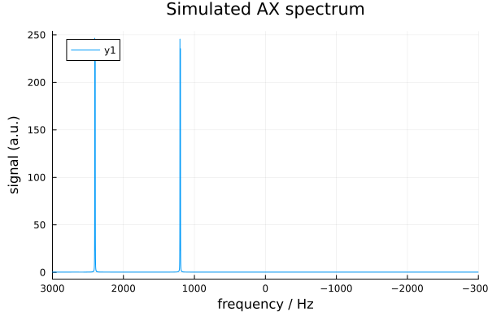
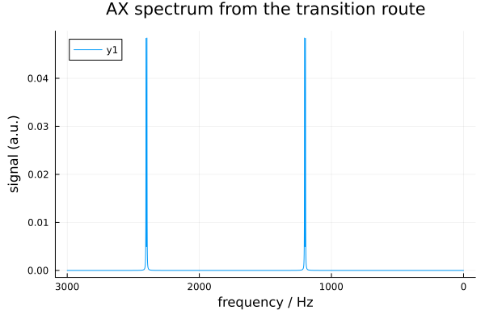

Spin Dynamics
SpinSim is the spin dynamics module in NMRflux.jl. It provides sparse Hilbert space tools for coupled spin 1/2 systems: spin operators, scalar coupling operators, time domain propagation, and transition resolved frequency domain calculations. The module carries explicit operators and Hamiltonians through every calculation, so the coherent dynamics and the coupling structure of the spin system stay intact. Nothing is reduced to a list of independent lines. Kronecker products are expanded but held as sparse matrices, which makes systems of roughly 25 spins practical.
1. Units and spin operators
The simulations set the reduced Planck constant to one, so every Hamiltonian matrix element is an angular frequency in rad/s. A chemical shift of shift ppm on a spectrometer of base frequency nu0 MHz therefore enters as 2pi * nu0 * shift, and a coupling of J Hz enters as 2pi * J. The GISSMO module builds its Hamiltonians in the same units. For a single spin 1/2, SpinSim exports the Cartesian operators Sx, Sy, and Sz, the identity Id, and the shift operators
\[S_{\pm} = S_x \pm i S_y.\]
Sy carries the opposite sign to the most common textbook convention, so the coded operators satisfy [Sx, Sy] = -i Sz. One consequence matters in practice: Sm is the operator that raises the magnetic quantum number here, and Sp is the one that lowers it. Section 5 comes back to this when it builds a detection operator. The coupling operators in the next section are unaffected, since Sy enters them squared. For n spins the Hilbert space dimension is 2^n. A single spin operator is embedded in the full space by Kronecker products,
\[S_\alpha^{(k)} = I_2^{\otimes(k-1)} \otimes S_\alpha \otimes I_2^{\otimes(n-k)}.\]
SpinSim.SpinOp(n, S, k) performs that embedding. SpinSim.TwoSpinOp(n, S, k, P, l) places two single spin operators at positions k and l. SpinSim.Kron carries methods for sparse, dense, and diagonal arguments and is also available as the infix operator ⊗. Every operator the module builds is sparse, so those are the paths in routine use.
2. Scalar coupling operators
SpinSim.OpJstrong(n, k, l) builds the isotropic scalar coupling operator
\[S_x^{(k)}S_x^{(l)} + S_y^{(k)}S_y^{(l)} + S_z^{(k)}S_z^{(l)},\]
and SpinSim.OpJweak(n, k, l) returns just the longitudinal term
\[S_z^{(k)}S_z^{(l)}.\]
Both are built on TwoSpinOp, which puts the first operator at index k and the second at index l. The indices have to satisfy k < l. Calling them the other way round is not supported and will not raise a helpful error. The Hamiltonians used in the examples below are written in the secular approximation with respect to the Zeeman Hamiltonian. OpJweak adds the further weak coupling approximation on top of that. A scalar coupling contribution between spins 2 and 3 in a six spin system looks like this:
using NMRflux
J = 12.0
H_J = 2pi * J * SpinSim.OpJstrong(6, 2, 3)The two spin AX system below is small enough to run inside this page, and the rest of the page reuses it.
using NMRflux
NSPINS = 2
BASE_FREQ = 600.0 # spectrometer base frequency in MHz
SHIFTS = [2.0, 4.0] # chemical shifts in ppm from the carrier
JCOUPLING = 7.0 # scalar coupling in Hz
H = sum(2pi * BASE_FREQ * SHIFTS[k] * SpinSim.SpinOp(NSPINS, SpinSim.Sz, k)
for k in 1:NSPINS)
H = H + 2pi * JCOUPLING * SpinSim.OpJstrong(NSPINS, 1, 2)
size(H)(4, 4)Those two shifts sit at 1200 Hz and 2400 Hz from the carrier, which is worth noting now because the sweep width chosen in section 4 has to hold both of them.
3. Time dependent propagation
For a Hamiltonian that changes during the experiment, SpinSim.RungeKutta integrates the Liouville-von Neumann equation
\[\frac{d\rho(t)}{dt} = -i[H(t), \rho(t)]\]
with a classical fourth order Runge-Kutta scheme.
a, rho = SpinSim.RungeKutta(dw, n, H, rho0, t0, obs; StepFactor=4)dw is the dwell interval, n the number of acquisition points, H a function returning the Hamiltonian at a given time, rho0 the initial density operator, t0 the start time, and obs a collection of observation operators. Each dwell interval is subdivided into StepFactor internal integration steps, four by default. The routine samples the observables at the start of each dwell, so the first row of the result corresponds to t0. It returns a tuple: an n by length(obs) array of sampled observables, and the density operator at the end of the run. Two methods exist, one specialised for a dense rho0 and a generic one that also drops numerical zeros from a sparse density operator as it goes.That array carries no coordinate. It needs the acquisition time axis attached before it can go through a processing chain. Processors do accept a bare array, but they fall back to index ranges for the coordinate, which leaves any apodization rate or frequency axis physically meaningless. SpinSim.Propagate covers the simpler case where you already have a propagator function P(t) and want to apply it repeatedly, sampling the same observables at each step.
4. Time independent FID simulation
When the Hamiltonian does not change, SpinSim.FID(H, δt, l) builds a one step propagator once with SpinSim.expm and reuses it for l acquisition points. The routine starts from a transverse deviation density operator proportional to the total Fx and detects with the sum of Sp over all spins. Its propagator sign and its detection operator work together, so a positive chemical shift lands at a positive frequency once the FID is transformed. The return value is a SpectData object whose coordinate holds the acquisition times. The dwell interval sets the sweep width, and anything outside it folds back into the spectrum. With lines at 1200 Hz and 2400 Hz, a 10 kHz sweep leaves plenty of room.
DWELL = 1 / 10000.0 # 10 kHz sweep width
NPOINTS = 8192
fid = SpinSim.FID(H, DWELL, NPOINTS)
size(fid.dat)(8192,)A simulated FID is an ordinary SpectData object, so the classical processing chain takes it without any conversion step. That is the whole point of sharing one data representation.
using Plots: plot, savefig
N_NEW = 16384
spectrum = Chain(
ZeroFill(SI=N_NEW),
Apodize(R=5.0),
FourierTransform(),
)(fid)
plot(spectrum;
xaxis = :flip,
xlims = [-3000, 3000],
xlabel = "frequency / Hz",
ylabel = "signal (a.u.)",
title = "Simulated AX spectrum"
)
The apodization rate of 5 inverse seconds gives a Lorentzian line width of about 1.6 Hz at full width half maximum. Each line is a doublet split by JCOUPLING, which is too narrow to see across a 3 kHz window. SpinSim.expm is the sparse matrix exponential used for that propagator. It follows the scaling and squaring algorithm described by Kuprov, Spin (Springer, 2023), and drops small elements as it goes so the propagator stays sparse.
SpinSim offers both a direct propagation route and a transition based route. Their sign and phase conventions are set by the routines themselves, and this documentation does not impose an extra one on top. A single uncoupled spin at a known offset is the cheapest way to pin down the convention of a particular routine before comparing signed frequencies or phases against another route or against external software.
5. Frequency domain route
SpinSim.Spectrum(ρ, H, Ψ; tol=1e-3, nev=400) diagonalises a time independent Hamiltonian, transforms the initial density operator ρ and the observation operator Ψ into the eigenbasis, and returns the transition frequencies together with their complex amplitudes. The return value is a (freqs, ints) tuple of two one dimensional arrays. The frequencies are eigenvalue differences, so they carry the same angular frequency units as the Hamiltonian. Divide by 2pi to get Hz. Unlike FID, this routine takes the detection operator from the caller, so the sign convention of section 1 becomes visible here. Building it from Sm, the raising operator in this module, puts the transitions at positive frequencies and matches what FID produces for the same system.
rho0 = 2.0^(-NSPINS) * sum(SpinSim.SpinOp(NSPINS, SpinSim.Sx, k) for k in 1:NSPINS)
Fdet = sum(SpinSim.SpinOp(NSPINS, SpinSim.Sm, k) for k in 1:NSPINS)
freqs, ints = SpinSim.Spectrum(rho0, H, Fdet; tol=1e-6)
length(freqs)4Transitions whose absolute amplitude falls below tol are discarded. For Hamiltonian dimensions below 4096 the routine uses dense diagonalisation. Above that it switches to Arpack.eigs and computes only nev eigenpairs, which is much faster but can omit transitions involving states outside that subset. Results from the partial route are only as complete as nev allows.
6. Line shapes
SpinSim.clorentzian(x0, σ, x) evaluates the complex Lorentzian
\[L(x; x_0,\sigma) = \frac{\sqrt{\sigma}}{\pi} \frac{1 + i\sqrt{\sigma}(x-x_0)} {1 + \sigma(x-x_0)^2}.\]
SpinSim.PeakSpect(p, i, r; lw=0.0001) sums that line shape at the positions p with the complex amplitudes i, evaluates it over the range or vector r, and returns the result as a complex SpectData object. The line width reaches the shape as sigma = (1/lw)^2, so lw is the half width at half maximum of the absorption component, in whatever units r uses. Since Spectrum returns angular frequencies, either build r in rad/s or convert the frequencies to Hz before calling PeakSpect. Mixing the two is the most common way to end up with a spectrum that is off by a factor of 2pi.
LINEWIDTH_HZ = 0.8 # half width at half maximum, matching the apodized FID above
freqs_hz = freqs ./ (2pi)
axis_hz = range(0.0, 3000.0, length=4096)
peaks = SpinSim.PeakSpect(freqs_hz, ints, axis_hz; lw=LINEWIDTH_HZ)
plot(peaks,
xaxis = :flip,
xlabel = "frequency / Hz",
ylabel = "signal (a.u.)",
title = "AX spectrum from the transition route"
)
Both routes describe the same spin system, and with the detection operator above they put the lines in the same places. One reaches them by propagating the density operator and transforming the result, the other by diagonalising the Hamiltonian and reading off the differences.
7. Choosing a route
Use RungeKutta when the Hamiltonian varies during the simulation. For a time independent Hamiltonian the choice is about what you want out. SpinSim.FID is the convenient one when the output should be a time domain signal you can push through the same processing chain as experimental data, and it arrives with the acquisition times already in place. SpinSim.Spectrum is the one to reach for when you need the transition frequencies and amplitudes explicitly, for instance to fit them or to build a line shape at a resolution the FID length would not support. It returns plain vectors by design, and PeakSpect is what brings them back into SpectData.
8. Building Hamiltonians from GISSMO
The GISSMO module fetches parametrised spin systems from the GISSMO database and turns them into SpinSim Hamiltonians. GISSMO.search(term) queries the database, GISSMO.SpinMatrix(id) returns a matrix with chemical shifts on the diagonal and J couplings off it, and GISSMO.Hamiltonian builds the Hamiltonian from either an entry identifier or a spin matrix. GISSMO.NMRsignals splits a spin matrix into uncoupled blocks, computes each block separately, and concatenates the resulting frequencies and intensities.
using NMRflux
SpM = GISSMO.SpinMatrix("GISSMD000023")
freqs, ints = GISSMO.NMRsignals(SpM)search, SpinMatrix, and the identifier method of Hamiltonian all query the GISSMO web service, so they appear here as plain code instead of running during the documentation build. When Hamiltonian is called on a database entry it refuses spin systems larger than maxSpin, which defaults to 25, and returns (-1, nothing) instead. The spin matrix method applies no such limit. NMRsignals currently simulates each block at a base frequency of 600 MHz and a carrier of 4.78 ppm regardless of the freq and ctr keywords. GISSMO.Hamiltonian takes those values directly and is the route to use when they need to change.